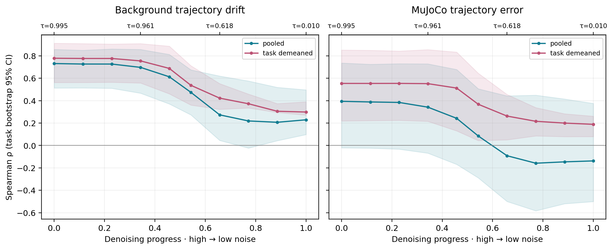
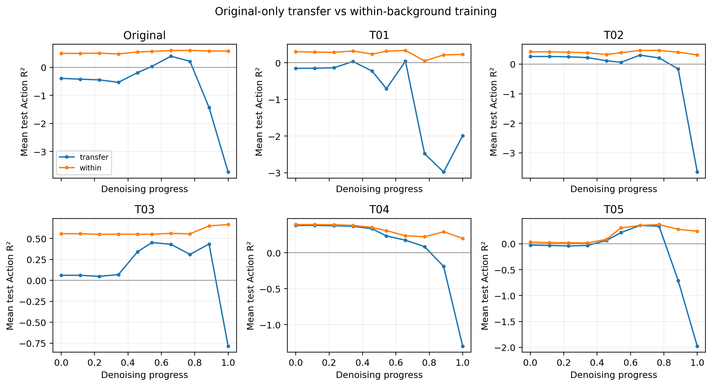
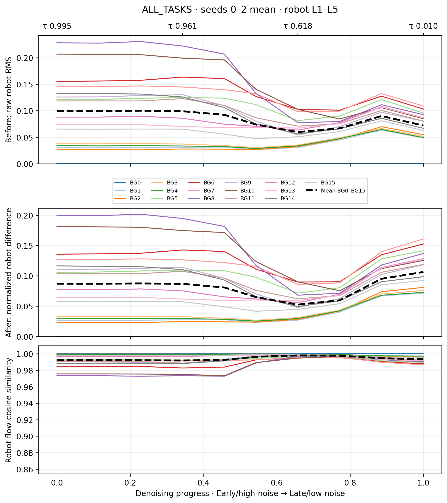
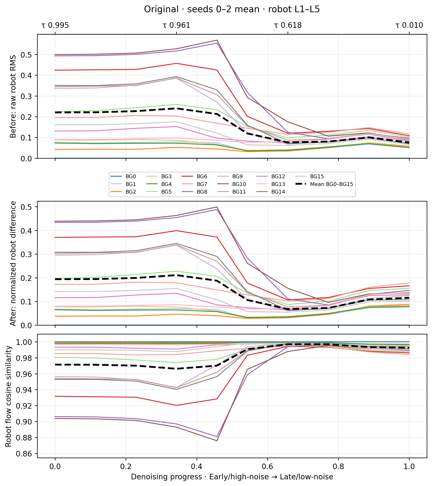
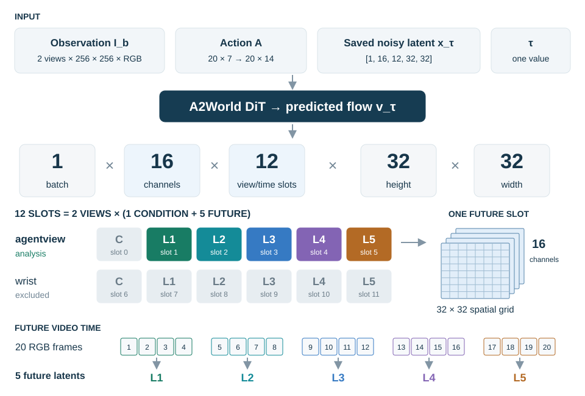
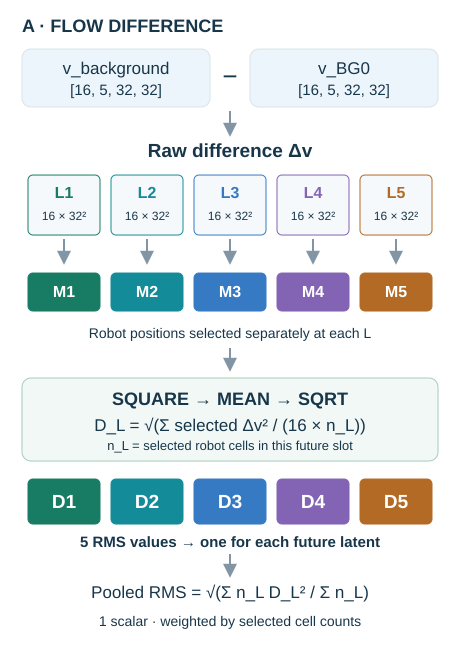
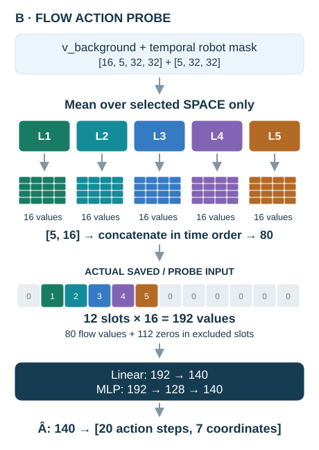
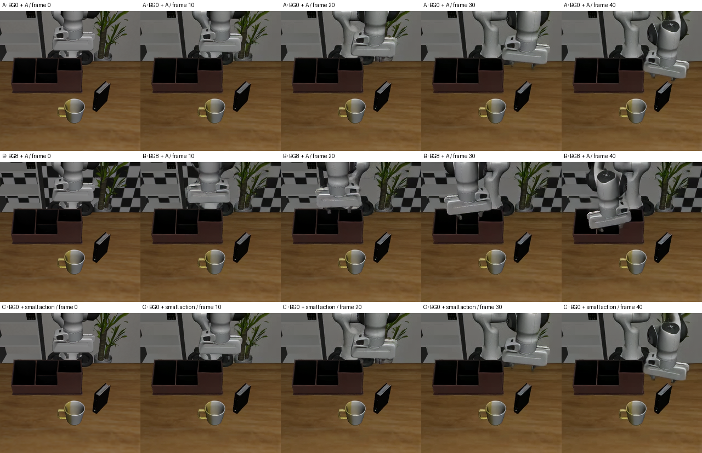

LIBERO의 동일한 물리 상태·action·실제 noisy latent에서 배경만 바꿨을 때 A2World의 로봇 영역 flow velocity가 달라지는지 분석했습니다.
기존 settled_v2의 6 tasks, BG0–BG15, 3 seeds, 10 denoising 시점을 사용합니다. 미래 20프레임은 5개 temporal latent로 표현되며, 주 분석은 agentview 미래 robot mask 안의 flow입니다.
기존 288개 생성 영상을 재사용했습니다. 배경 간 로봇 궤적 차이와 초기 normalized robot-flow 차이의 task-demeaned Spearman ρ는 0.779입니다. MuJoCo GT 오차와의 최대 ρ는 0.554이며 task별 차이가 큽니다.
비원본 배경·task·시점 평균 Linear Action R²: BG0 transfer -0.283 → within-background 0.377 / held-out-background LOBO 0.343. 재학습 회복은 배경에 따른 표현 변화를 지지하며, 정보 소실을 뜻하지 않습니다.
6개 연속 action 좌표와 1·4·8·20-step 구간의 dose-response에서 EAP를 측정했습니다. 측정 범위 밖은 외삽하지 않습니다. 동일 flow 크기는 동일 동작을 뜻하지 않습니다.


첫 20-action chunk의 2D 손 표면 추적점 중심을 분석했습니다. Flow는 공통 BG0 latent 경로의 조건 민감도이며, 상관은 인과 매개 경로의 증명이 아닙니다.
공통 BG0 latent 경로에서 측정한 조건 민감도입니다. 독립 rollout 간 최종 차이나 물리적 이동 오차와 동일하지 않습니다. 초기 denoising을 motion planning 단계라고 확정하지 않습니다.





초기 관측 포함 41프레임, 10 FPS, 4.1초입니다. 두 개의 20-action chunk를 이어 생성했습니다. 주 flow 비교는 첫 chunk입니다.

이 페이지는 JavaScript 없이 읽을 수 있습니다. 상세 제어·시점 선택은 인터랙티브 사이트를 이용하세요.